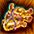

メニュー
トップ >> ダンジョン >> ヤティカヌ
基本仕様
ガレリオン野営地
闇商人
フィールドボス
ガレリオン野営地の特殊NPC
ヤティカヌ刻印装備 (刻印防具)
古代刻印の指輪 (1250Lv〜)
貢献度システム
「ヤティカヌの茂み」に入場するには前提エピソードクエストをクリアする必要があります。
(1)探検隊「ガレリオン」から始まる４クエスト
「探検隊ガレリオン」 「それぞれの役割」 「海へと続く手掛かり」「まだ認めることはできない！」「まだ認めることはできない！」
(2)未知へ向けて
■クエスト受諾場所
魔法都市スマグの「グローティング酒場」内、NPC「ハイドネル(4,15)」
※ヤティカヌ地域でポータル・スフィアーやムーンストーン等の場所記憶や、コーリング、タウンポータル等のスキルは使用できません。
ガイドシステムについては2021/3より利用可能になりました。
「探検隊ガレリオン」関連新規エピソードクエストを完了することで
「古都ブルンネンシュティグ」の中央噴水付近に追加された
NPC「探検隊テレポーター(座標78,78付近)」より移動を行う事ができます。
ガレリオン野営地は、プレイヤーがクエストをクリアしたり、
アイテムを交換することで、貢献度が上がります。
貢献度が上昇すると「Campレベル」が上昇し、
領地が開放され、NPCの販売物も増加します。（最大3段階）
約4時間毎に場所を移動し、ヤティカヌ系列全マップのどこかに移動します。
1回の販売につき、全プレイヤーで合計5回アイテムを購入できます（次の移動でリセット）
移動するごとに、販売アイテムがランダムで変動します。（全アイテム古代森のコイン70枚で購入可能。）
1IDにつき１回購入可能です。
詳しくはヤティカヌ闇商人の項目より。
既存の討伐・エリアボスシステムとは別カウントで1日1回挑戦可能です。
0時から4時間おきに挑戦可能で、1回につき4分間(0:00～0:04)入場可能です。
「メガンテリオン」「大人アリドネ」のみドロップする 特別な刻印装備がそれぞれ1種類ずつあります。
加えてセットオプションのお守りを低確率で入手可能です。
-エリアボスとの戦闘は4時間間隔で生成された進入ポータルを通してエリアボスゾーンに入場可能です。
-進入ポータルが生成されて5分後にフィールドボスが出現します。ボスが出現すると進入ポータルは閉じます。
-古代森コインは100％の確率でプレイヤー単位でドロップされ、ドロップアイテムは低確率で入手可能です。
-エリアボスドロップアイテムはエリアボス種類に関係なく一日に一回獲得可能ですが、報酬経験値は繰り返し獲得可能です。
各種類ごとに1日の購入制限があり、購入金額はキャラクターレベルによって変化します。
また、購入したアイテムの有効期限は1日となります。
■薬草学者シルベスから購入できるアイテム一覧
刻印防具は「古代森のコイン」140枚で交換できます。
刻印装備は通常の装備と違い、取引やオプションを付与できません。
NPC「モリス」から「古代森のコイン」と「古代刻印石」「古代流れ石」を交換して強化アイテムとして強化します。
刻印レベルが上がると、ベースオプションの性能が上昇します。(成功率100%)

詳細はヤティカヌ 刻印防具より。
1,250 〜 1,500 レベル区間で使用できるリング。前提クエスト「古代の刻印」をクリア後、新規NPCで購入可能。
刻印レベル (1〜30) を上げるごとに能力値が強化され、新しいオプションが解禁されます。
※ キャラクターあたり 1個のみ装着可能。制約を無視する指輪枠を製作しても同一。
※ 取引 / 商店販売 / 銀行取引・オプション付与・錬成・解放・装備分解・異界の清水交換 — 全て不可。
※ 効果が発動するのは ヤティカヌ系フィールドのみ。混沌の大地・ボス地域などでは効果なし。
※ 基本オプションとして「被ダメージ 15% 減少」が常時付与されています (刻印レベルに依存せず固定)。
■ Lv 30 までの累計コスト
※ 協会の刻印石は Lv 30 までで 合計 282 個 必要。コイン換算すると以下の通り:
※ 上記とは別に、古代刻印の指輪本体の購入に 冒険団コイン 100個 が別途必要 (NPC オベ / モリス どちらでも同価格)。
■ 集めるルートの選び方 (一例)
・古代森のコインルートは 冒険団コインルートの 1/20 のコイン数 で済む。ヤティカヌに通って古代森のコインを集めている人は実質こちら(刻印師モリス NPC)が効率的。
・冒険団コインは入手手段が広く、ヤティカヌに通っていない人でも揃えやすい。本部のオベ NPC からまとめて買えるのが手軽。
・両方を併用するのも普通。古代森のコインの在庫を切らした分を冒険団コインで補うやり方が無難。
出典: 公式お知らせ「専用協会装備の追加」(2025年2月20日 / ano=1269)
- Camp段階は、週間クエストを完了したり、アイテムを投資すると貢献度が上がります。
- ユーザ全体貢献度の合計が一定数値に達すると、次のステップへと進化します。
- Camp2:3500pt、Camp3：6000pt
-ガレリオンキャンプのNPCハイドネル（座標70,10）を通してアイテムを投資できます。
- 投資できるアイテムは炎の石、神秘の石、結晶石、共鳴石、修復済みタティリス遺跡の出土品、金のインゴットです。
- Camp段階が最大に達すると、それ以上の資源を投資できません。
- ガレリオンキャンプのNPCリヤン（座標72,13）を通して、毎週1回の週間クエスト進行が可能です。
- 週間クエストは毎週月曜日00:00に初期化されます。
- 週間クエストクリア時の古代森コインを獲得できます。
- 村が3段階に進化する瞬間貢献度が1~3位プレイヤーの像が野営地の中央に建てられます。(対象キャラが消えても貢献ptは残存します)
- 貢献度スコアが同じである場合、貢献度を先に上げたユーザが優先されます。
- 村が3段階に達すると、それ以上の貢献度を上げることができず、昼間クエストを進行しても完了報酬のみ支給されます。

-一般モンスターよりも長い出現時間を持っており、討伐時一定確率(20%程度？)で古代森コインをドロップします。
-死亡時の周りに強力なダメージを与えるスキルを詠唱します。
- スキルの仕様がPVP仕様で適用されます。
- 入場時に支援スキルが解除されます。
- PTを組んで討伐・経験値を得ることも可能です。
- 宝物地図のドロップがPVPエリア内に限定されます。(2022/3/2追加)
- 日本では2020/12/23に実装。
ヤティカヌエリア
基本仕様
ガレリオン野営地
闇商人
フィールドボス
ガレリオン野営地の特殊NPC
ヤティカヌ刻印装備 (刻印防具)
古代刻印の指輪 (1250Lv〜)
貢献度システム
基本仕様
1250Lv～入場可能な特殊フィールドです。「ヤティカヌの茂み」に入場するには前提エピソードクエストをクリアする必要があります。
(1)探検隊「ガレリオン」から始まる４クエスト
「探検隊ガレリオン」 「それぞれの役割」 「海へと続く手掛かり」「まだ認めることはできない！」「まだ認めることはできない！」
(2)未知へ向けて
■クエスト受諾場所
魔法都市スマグの「グローティング酒場」内、NPC「ハイドネル(4,15)」
※ヤティカヌ地域でポータル・スフィアーやムーンストーン等の場所記憶や、コーリング、タウンポータル等のスキルは使用できません。
ガイドシステムについては2021/3より利用可能になりました。
ガレリオン野営地
【ガレリオン野営地】「探検隊ガレリオン」関連新規エピソードクエストを完了することで
「古都ブルンネンシュティグ」の中央噴水付近に追加された
NPC「探検隊テレポーター(座標78,78付近)」より移動を行う事ができます。
ガレリオン野営地は、プレイヤーがクエストをクリアしたり、
アイテムを交換することで、貢献度が上がります。
貢献度が上昇すると「Campレベル」が上昇し、
領地が開放され、NPCの販売物も増加します。（最大3段階）
闇商人
サーバのCampランクが3の時のみ出現し、特殊なアイテムの販売を行っています。約4時間毎に場所を移動し、ヤティカヌ系列全マップのどこかに移動します。
1回の販売につき、全プレイヤーで合計5回アイテムを購入できます（次の移動でリセット）
移動するごとに、販売アイテムがランダムで変動します。（全アイテム古代森のコイン70枚で購入可能。）
1IDにつき１回購入可能です。
詳しくはヤティカヌ闇商人の項目より。
フィールドボス
以下ヤティカヌMAPにて新規フィールドボスが出現します。既存の討伐・エリアボスシステムとは別カウントで1日1回挑戦可能です。
0時から4時間おきに挑戦可能で、1回につき4分間(0:00～0:04)入場可能です。
「メガンテリオン」「大人アリドネ」のみドロップする 特別な刻印装備がそれぞれ1種類ずつあります。
加えてセットオプションのお守りを低確率で入手可能です。
| 名称 | 入手コイン | ドロップアイテム | 対象フィールド |
|---|---|---|---|
| メガンテリオン | 4枚 | 古代森の庇護(鎧) | 日の出(2層) |
| 大人アリドネ | 5枚 | 古代森のささやき(首) |
星降る(3層) |
-進入ポータルが生成されて5分後にフィールドボスが出現します。ボスが出現すると進入ポータルは閉じます。
-古代森コインは100％の確率でプレイヤー単位でドロップされ、ドロップアイテムは低確率で入手可能です。
-エリアボスドロップアイテムはエリアボス種類に関係なく一日に一回獲得可能ですが、報酬経験値は繰り返し獲得可能です。
ガレリオン野営地の特殊NPC
消費アイテム
薬草学者シルベス(座標125,10)より特殊な消費アイテムを購入できます。各種類ごとに1日の購入制限があり、購入金額はキャラクターレベルによって変化します。
また、購入したアイテムの有効期限は1日となります。
■薬草学者シルベスから購入できるアイテム一覧
| 購入リスト | 価格（ゴールド） | 購入個数 制限 | 要求村段階 | 性能 |
有効期限： 1日限定 |
|---|---|---|---|---|---|
| フルヒールポーション | 200,000 | - | 1 | HP 100％に回復 | - |
| フルチャージポーション | 200,000 | - | 1 | CP 100％に回復 | - |
| 万病治療薬 | 200,000 | - | 1 | すべての状態異常を削除 | - |
|
草原の涙 |
Lv * 600 | 3 | 2 | 5分間のすべての属性抵抗30％増加 | O |
|
天然ナツメ |
Lv * 600 | 3 | 2 | 300秒間防御力100％、最大HP100％増加 | O |
|
アスフォデル |
Lv * 800 | 3 | 3 | 5分間300％物理攻撃力上昇 | O |
|
賢者の実 |
Lv * 800 | 3 | 3 | 5分間、魔法攻撃力200％増加 | O |
|
妖精龍の心臓  |
Lv * 1200 | 3 | 3 | 5分間CP最高固定 | O |
|
安息草 |
Lv * 1200 | 1 | 3 |
10秒の間、最大HPの10％で復活する。戦闘不能ペナルティ時間を10％に短縮させる。 精鋭討伐で使用可 |
O |
ヤティカヌ刻印装備
装備アイテム
『刻印師モリス(座標129,8)』より特殊な刻印防具を交換できます。刻印防具は「古代森のコイン」140枚で交換できます。
刻印装備は通常の装備と違い、取引やオプションを付与できません。
NPC「モリス」から「古代森のコイン」と「古代刻印石」「古代流れ石」を交換して強化アイテムとして強化します。
刻印レベルが上がると、ベースオプションの性能が上昇します。(成功率100%)
詳細はヤティカヌ 刻印防具より。
古代刻印の指輪 (1250Lv〜)
2025年2月20日 (ver 0.0844) 追加。1,250 〜 1,500 レベル区間で使用できるリング。前提クエスト「古代の刻印」をクリア後、新規NPCで購入可能。
刻印レベル (1〜30) を上げるごとに能力値が強化され、新しいオプションが解禁されます。
※ キャラクターあたり 1個のみ装着可能。制約を無視する指輪枠を製作しても同一。
※ 取引 / 商店販売 / 銀行取引・オプション付与・錬成・解放・装備分解・異界の清水交換 — 全て不可。
※ 効果が発動するのは ヤティカヌ系フィールドのみ。混沌の大地・ボス地域などでは効果なし。
■ 購入NPC・価格
| アイテム | 購入フィールド | NPC | 価格 |
|---|---|---|---|
| 古代刻印の指輪 | 冒険家協会ブルンネンシュティグ本部 | コイン商人オベ (46, 8) | 冒険団コイン 100個 |
| ガレリオン野営地 | 刻印師モリス (129, 7) | ||
| 協会の刻印石 | 冒険家協会ブルンネンシュティグ本部 | コイン商人オベ (46, 8) | 冒険団コイン 200個 |
| ガレリオン野営地 | 刻印師モリス (129, 7) | 古代森のコイン 10個 |
■ 前提クエスト「古代の刻印」
| クエスト名 | 進行フィールド | 関連NPC | スタート条件 |
|---|---|---|---|
| 古代の刻印 | 冒険家協会ブルンネンシュティグ本部 | コイン商人オベ (46, 8) | 1,250 レベル以上 かつ 保有クエスト 11個以下 で自動受領 |
■ 刻印レベルごとの効果
※ 全レベルで刻印は 100% 成功 (失敗で消費だけする心配はなし)。| 刻印 Lv |
協会の 刻印石 (個) |
効果 | |||
|---|---|---|---|---|---|
| 魔法属性 ダメージ吸収 |
全ての属性抵抗 | フィールドの属性 最大値制限に対する抵抗 |
移動速度低下に 対する抵抗 |
||
| 1 | － | 1 | － | － | － |
| 2 | 1 | 2 | － | － | － |
| 3 | 1 | 3 | － | － | － |
| 4 | 2 | 4 | － | － | － |
| 5 | 2 | 5 | － | － | － |
| 6 | 3 | 6 | － | － | － |
| 7 | 3 | 7 | － | － | － |
| 8 | 3 | 8 | － | － | － |
| 9 | 3 | 9 | － | － | － |
| 10 | 6 | 10 | 10 | － | － |
| 11 | 6 | 11 | 11 | － | － |
| 12 | 6 | 12 | 12 | － | － |
| 13 | 6 | 13 | 13 | － | － |
| 14 | 8 | 14 | 14 | － | － |
| 15 | 8 | 15 | 15 | － | － |
| 16 | 8 | 16 | 16 | － | － |
| 17 | 8 | 17 | 17 | － | － |
| 18 | 8 | 18 | 18 | － | － |
| 19 | 8 | 19 | 19 | － | － |
| 20 | 12 | 20 | 20 | 1 | － |
| 21 | 12 | 21 | 21 | 2 | － |
| 22 | 12 | 22 | 22 | 3 | － |
| 23 | 12 | 23 | 23 | 4 | － |
| 24 | 12 | 24 | 24 | 5 | － |
| 25 | 12 | 25 | 25 | 6 | － |
| 26 | 20 | 26 | 26 | 7 | － |
| 27 | 20 | 27 | 27 | 8 | － |
| 28 | 20 | 28 | 28 | 9 | － |
| 29 | 20 | 29 | 29 | 10 | － |
| 30 | 40 | 30 | 30 | 11 | 100 |
※ 基本オプションとして「被ダメージ 15% 減少」が常時付与されています (刻印レベルに依存せず固定)。
■ Lv 30 までの累計コスト
※ 協会の刻印石は Lv 30 までで 合計 282 個 必要。コイン換算すると以下の通り:
| すべて 冒険団コインで集める場合 | すべて 古代森のコインで集める場合 |
|---|---|
| 282 × 200 = 56,400 個 | 282 × 10 = 2,820 個 |
※ 上記とは別に、古代刻印の指輪本体の購入に 冒険団コイン 100個 が別途必要 (NPC オベ / モリス どちらでも同価格)。
■ 集めるルートの選び方 (一例)
・古代森のコインルートは 冒険団コインルートの 1/20 のコイン数 で済む。ヤティカヌに通って古代森のコインを集めている人は実質こちら(刻印師モリス NPC)が効率的。
・冒険団コインは入手手段が広く、ヤティカヌに通っていない人でも揃えやすい。本部のオベ NPC からまとめて買えるのが手軽。
・両方を併用するのも普通。古代森のコインの在庫を切らした分を冒険団コインで補うやり方が無難。
■ 効果適用フィールド
効果が発揮されるのは ヤティカヌ一般 6種 + 対応ミラーダンジョン 24種 のみ。| 区分 | フィールド |
|---|---|
| 一般 (6種) | ヤティカヌ月の出森林 / 日の出森林 / 星降る森林 / 微風の森林 / 夜影の森林 / 暁の森林 |
| ミラー (24種) | 上記6種の各 1-1 / 1-2 / 1-3 / 1-4 / 1-5 (ミラーダンジョン) |
出典: 公式お知らせ「専用協会装備の追加」(2025年2月20日 / ano=1269)
貢献度システム
- ガレリオン野営地にはCamp段階が存在し、Campレベルが上昇すると様々なコンテンツがヤティカヌエリアで解放されます。- Camp段階は、週間クエストを完了したり、アイテムを投資すると貢献度が上がります。
- ユーザ全体貢献度の合計が一定数値に達すると、次のステップへと進化します。
- Camp2:3500pt、Camp3：6000pt
-ガレリオンキャンプのNPCハイドネル（座標70,10）を通してアイテムを投資できます。
- 投資できるアイテムは炎の石、神秘の石、結晶石、共鳴石、修復済みタティリス遺跡の出土品、金のインゴットです。
- Camp段階が最大に達すると、それ以上の資源を投資できません。
- ガレリオンキャンプのNPCリヤン（座標72,13）を通して、毎週1回の週間クエスト進行が可能です。
- 週間クエストは毎週月曜日00:00に初期化されます。
- 週間クエストクリア時の古代森コインを獲得できます。
- 村が3段階に進化する瞬間貢献度が1~3位プレイヤーの像が野営地の中央に建てられます。(対象キャラが消えても貢献ptは残存します)
- 貢献度スコアが同じである場合、貢献度を先に上げたユーザが優先されます。
- 村が3段階に達すると、それ以上の貢献度を上げることができず、昼間クエストを進行しても完了報酬のみ支給されます。
その他システム
秘密ダンジョン
- ソロ専用の秘密ダンジョン妖精の試練が存在します。精鋭討伐システム
- 精鋭討伐システムが存在します。中ボス
- 戦闘フィールドには大型モンスターが存在します。-一般モンスターよりも長い出現時間を持っており、討伐時一定確率(20%程度？)で古代森コインをドロップします。
-死亡時の周りに強力なダメージを与えるスキルを詠唱します。
PVPエリア
- PVP可能エリアが存在し、PVPエリアでは他のプレイヤーを攻撃できます。- スキルの仕様がPVP仕様で適用されます。
- 入場時に支援スキルが解除されます。
- PTを組んで討伐・経験値を得ることも可能です。
備考
- 韓国では2020/11/4に実装。- 日本では2020/12/23に実装。